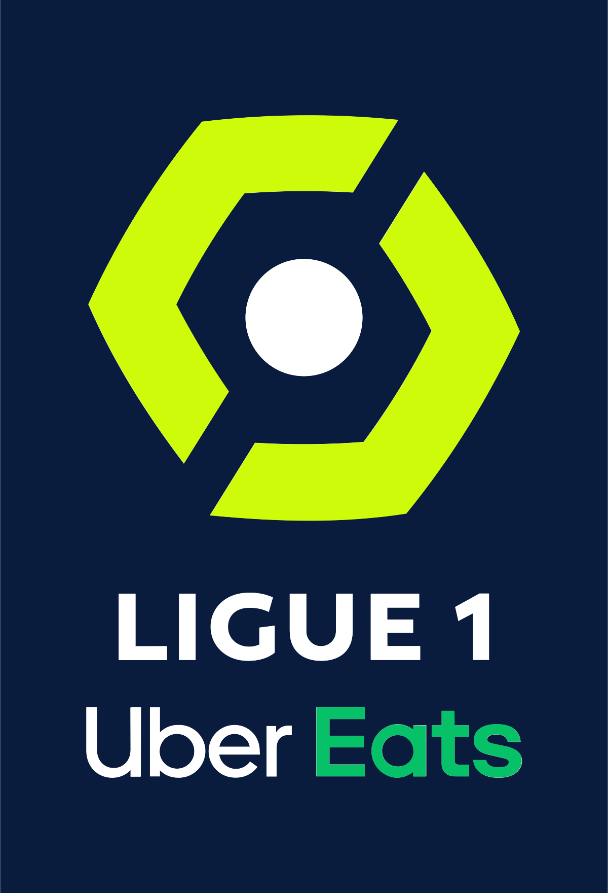

리그앙(Ligue 1)
리그앙(Ligue 1)리그앙은 프랑스 최고의 축구 리그다. 1932년 나시오날(National)이라는 이름으로 출범했고, 1933년부터 2002년까지는 디비지옹앙(Division 1)이라는 명칭을 썼다. 한국에서는 르 샹피오나(Le championnat)라는 이름으로 불리기도 하는데, 르 샹피오나는 선수권 대회라는 뜻으로 프랑스 축구 리그 전체를 뜻하는 말이다.
20개 팀이 홈 앤드 어웨이 방식으로 경쟁하며 최다 우승팀은 AS 생테티엔(10회)이다. 리그앙은 현재 UEFA 리그 랭킹에서 6위를 기록 중이다. 포르투갈 리그에 순위가 밀리면서 자존심을 구겼는데, 리그 수준은 높지만 상위권 팀들이 유럽클럽대항전에서 별다른 성과를 내지 못하면서 점수를 잃은 탓이 크다. 1992/93시즌 올랭피크드 마르세유가 UEFA챔피언스리그에서 우승한 뒤 어떤 팀도 우승컵과 연을 맺지 못했다.